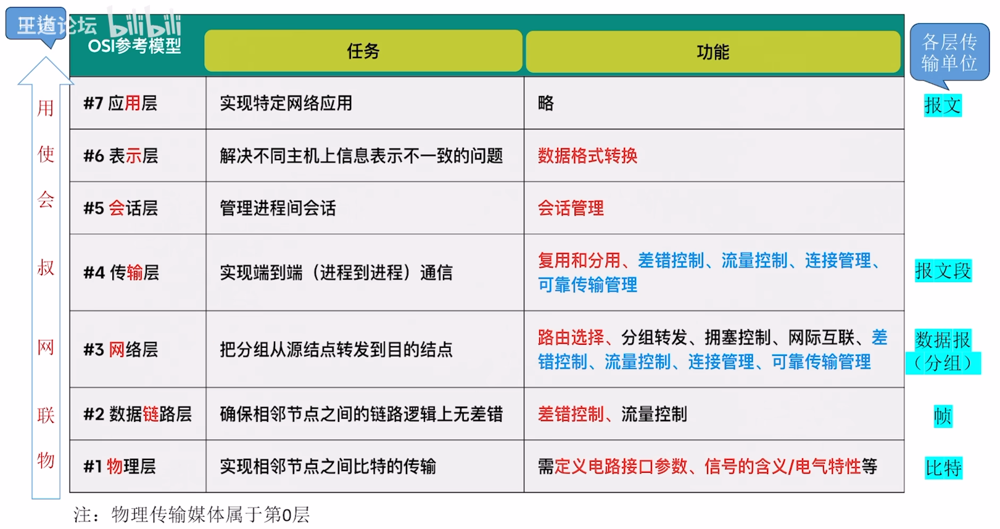

概念
一般认为，计算机网络是一个将众多分散的、自治的计算机系统，通过通信设备与线路连接起来，由功能完善的软件实现资源共享和信息传递的系统。
计算机网络（简称网络）由若干结点(node)和连接这些结点的链路(link)组成。
网络中的结点可以是计算机、集线器、交换机或路由器等。网络之间还可通过路由器互连，构成一个覆盖范围更广的计算机网络，这样的网络称为互连网(internet)。
于是，我们可以这样理解：网络把许多计算机连在一起，而互连网则把许多网络通过路由器连在一起。
internet 和 Internet 的区别
- internet（互连网）：一个通用名词，泛指由多个计算机网络互连而成的计算机网络。在这些网络之间可以使用任意的通信协议作为通信规则，不一定非要使用 TCP/IP 协议。
- Internet（互联网或因特网）：一个专用名词，指当前全球最大的、开放的、由众多网络和路由器互连而成的特定计算机网络，它采用TCP/IP 协议族作为通信规则。
因特网简介 *
组成
从不同的角度看，可将计算机网络的组成分为如下几类。
-
从组成部分看，计算机网络主要由硬件、软件、协议三大部分组成。
- 硬件：主要由主机（也称端系统）、通信链路（如双绞线、光纤）、交换设备（如路由器、交换机等）和通信处理机（如网卡）等组成。
- 软件：主要包括各种实现资源共享的软件和方便用户使用的各种工具软件（如 E-mail 程序、FTP 程序、聊天程序等）。
- 协议：计算机网络的核心，如同交通规则制约汽车驾驶一样，协议规定了网络传输数据时所遵循的规范。
-
从工作方式看，计算机网络可分为边缘部分和核心部分。
- 边缘部分：由所有连接到互联网上的供用户直接使用的主机组成，用来进行通信和资源共享；
- 核心部分：由大量网络和连接这些网络的路由器组成，它为边缘部分提供连通性和交换服务。
-
从功能组成看，计算机网络由通信子网和资源子网组成。
- 通信子网：由各种传输介质、通信设备和相应的网络协议组成，它使网络具有数据传输、交换、控制和存储的能力，实现联网计算机之间的数据通信。
- 资源子网：实现资源共享功能的设备及其软件的集合，向网络用户提供共享其他计算机上的硬件资源、软件资源和数据资源的服务。
功能
主要有以下 5 大功能
-
数据通信
数据通信是计算机网络最基本和最重要的功能，用来实现联网计算机之间各种信息的传输，并联系分散在不同地理位置的计算机，进行统一的调配、控制和管理。
-
资源共享资源
共享既可是软件共享、数据共享，又可是硬件共享。它使计算机网络中的资源互通有无、分工协作，从而极大地提高了硬件资源、软件资源和数据资源的利用率。
-
分布式处理
当计算机网络中的某个计算机系统负荷过重时，可将其处理的某个复杂任务分配给网络中的其他计算机系统，从而利用空闲计算机资源来提高整个系统的利用率。
-
提高可靠性
计算机网络中的各台计算机可以通过网络互为替代机。
-
负载均衡
将工作任务均衡地分配给计算机网络中的各台计算机。
数据交换方式
在网络核心部分起重要作用的是路由器（router），它对收到的分组进行存储转发来实现分组交换。要了解分组交换的原理，首先就要学习电路交换的相关概念。
电路交换
最典型的电路交换网是传统电话网。
从通信资源分配的角度看，交换就是按照某种方式动态地分配传输线路的资源。
电路交换分为三步：连接建立、数据传输和连接释放。
在进行数据传输前，两个结点之间必须先建立一条专用（双方独占）的物理通信路径（由通信双方之间的交换设备和链路逐段连接而成），该路径可能经过许多中间结点。在数据传输过程中，这一物理通信路径始终被用户独占，直到通信结束后才被释放。
在电路交换的整个通信阶段，比特流连续地从源点直达终点，就好像在一个管道中传送。
电路交换技术的优 点如下：
- 通信时延小：因为通信线路为通信双方专用，数据直达，所以传输时延非常小。
- 有序传输：双方通信时按发送顺序传送数据，不存在失序问题。
- 没有冲突：不同的通信双方拥有不同的信道，不会出现争用物理信道的问题。
- 适用范围广：电路交换既适用于传输模拟信号，又适用于传输数字信号。
- 实时性强：通信双方之间的物理通路一旦建立，双方就可随时通信。
- 控制简单：电路交换的交换设备（交换机等）及控制均较简单。
电路交换技术的缺点如下：
- 建立连接时问长：电路交换的平均连接建立时间对计算机通信来说太长。
- 线路利用率低：物理通路被通信双方独占，即使线路空闲，也不能供其他用户使用。
- 灵活性差：物理通路中的任何一点出现故障，就必须重新拨号建立新的连接。
- 难以规格化：不同类型、不同规格、不同速率的终端很难相互进行通信。
- 难以实现差错控制：中间结点不具备存储和检验数据的能力，无法发现并纠正错误。
注意，在电路交换中，电路建立后，除源结点和目的结点外，电路上的任何结点都采取“直通方式”接收数据和发送数据，即不存在存储转发所耗费的时间。
报文交换
报文交换是分组交换的前身。
数据交换的单位是报文，用户数据加上源地址、目的地址等信息后，后封装成报文（message）。
报文交换采用存储转发技术，整个报文先传送到相邻的结点，全部存储后查找转发表，转发到下一个结点，如此重复，直至到达目的结点。
每个报文都可单独选择到达目的结点的路径。
报文交换技术的优点如下：
- 无须建立连接：通信前无须建立连接，没有建立连接时延，用户可随时发送报文。
- 动态分配线路：交换设备存储整个报文后，选择一条合适的空闲线路，转发报文。
- 线路可靠性高：若某条传输路径发生故障，则可重新选择另一条路径传输数据。
- 线路利用率高：报文在哪段链路上传送时才占用这段链路的通信资源。
- 提供多目标服务：一个报文可以同时发送给多个目的地址。
报文交换技术的缺点如下：
- 转发时延高：交换结点要将报文整体接收完后，才能查找转发表转发到下一个结点。
- 缓存开销大：报文的大小没有限制，这就要求交换结点拥有较大的缓存空间。
- 错误处理低效：报文较长时，发生错误的概率相对更大，重传整个报文的代价也很大。
分组交换
分组交换也采用存储转发技术，但解决了报文交换中报文过长的问题。
若报文太长，则对交换结点的缓存容量就有很大的需求，在错误处理方面也比较低效。
源结点在发送之前，先把较长的报文划分成若干较小的等长数据段，在每个数据段前面添加一些由必要控制信息（如源地址、目的地址和编号信息等）组成的首部，构成分组(Packet)。
源结点将分组发送到分组交换网中，分组交换网中的分组交换机收到一个分组后，先将其缓存，然后从其首部中提取目的地址，据此查找自己的转发表，再后将分组转发给下一个分组交换机。经过多个分组交换机的存储转发后，分组最终到达目的结点。
分组交换技术的优点如下：
- 无建立时延：通信前无须建立连接，没有建立连接时延，用户可随时发送分组。
- 线路利用率高：分组在哪段链路上传送时才占用这段链路的通信资源。相比采用电路交换传送突发式的计算机数据，分组交换的通信线路利用率大大提高。
- 简化了存储管理（相对于报文交换）：因为分组的长度固定，相应缓冲区的大小也固定，在交换结点中存储器的管理通常被简化为对缓冲区的管理，相对比较容易。
- 加速传输：分组是逐个传输的，可以使后一个分组的存储操作与前一个分组的转发操作并行，这种流水线方式减少了报文的传输时间。此外，传输一个分组比传输一次报文所需的缓冲区小得多，这样，因缓冲区不足而等待发送的概率及时间必然也少得多。
- 减小了出错概率和重发数据量：因为分组较短，其出错概率必然减小，所以每次重发的数据量也就大大减少，这样不仅提高了可靠性，而且减小了传输时延。
分组交换技术的缺点如下：
- 存在存储转发时延：尽管分组交换比报文交换的传输时延小，但相对于电路交换仍存在存储转发时延，且其结点交换机必须具有更强的处理能力。
- 需要传输额外的信息量：每个小数据段都要加上控制信息以构成分组，这使得传送的信息量增大了 5%～ 10%，进而使得控制复杂，降低了通信效率，增大了处理的时延。
- 当分组交换网采用数据报服务时，可能出现失序、丢失或重复分组的情况，分组到达目的结点时，要对分组按编号进行排序等工作，而这些工作很麻烦。若采用虚电路服务，则虽然没有失序问题，但有呼叫建立、数据传输和虚电路释放三个过程。
比较
当要传送的数据量很大且其传送时间远大于呼叫时间时，采用电路交换较为合适。
当端到端的通路由多段链路组成时，采用分组交换传送数据较为合适。从提高整个网络的信道利用率看，报文交换和分组交换优于电路交换，其中分组交换比报文交换的时延小，尤其适合计算机之间的突发式数据通信。
分类
按分布范围分类
-
广域网(WAN)
广域网的任务是提供长距离通信，运送主机所发送的数据，其覆盖范围通常是直径为几十到几千千米的区域。
广域网是互联网的核心部分。连接广域网的各结点交换机的链路一般都是高速链路，具有较大的通信容量。
-
城域网(MAN)
城域网的覆盖范围可以跨越几个街区甚至整个城市，覆盖区域的直径为 5 ～ 50km。
城域网大多采用以太网技术，因此有时也常并入局域网的范围讨论。
-
局域网(LAN)
局域网一般用主机通过高速线路相连，覆盖范围较小，通常是直径为几十到几千米的区域。
传统上，局域网使用广播技术，而广域网使用交换技术。
-
个人区域网(PAN)
个人区域网是指在个人工作的地方将消费电子设备（如平板电脑、智能手机等）用无线技术连接起来的网络，也称无线个人区域网(WPAN)。
按传输技术分类
-
广播式网络
所有联网计算机都共享一个公共通信信道。
当一台计算机利用共享通信信道发送报文分组时，所有其他计算机都会“收听”到这个分组。接收到该分组的计算机将通过检查目的地址来决定是否接收该分组。
局域网基本上都采用广播式通信技术，广域网中的无线、卫星通信网络也采用广播式通信技术。
-
点对点网络
每条物理线路连接一对计算机。
若通信的两台主机之间没有直接连接的线路，则它们之间的分组传输就要通过中间结点进行存储和转发，直至目的结点。
按拓扑结构分类
网络拓扑结构是指由网中结点（路由器、主机等）与通信线路之间的几何关系表示的网络结构，主要指通信子网的拓扑结构。
按网络的拓扑结构，可分为总线形、星形、环形和网状网络等。星形、总线形和环形网络多用于局域网，网状网络多用于广域网。
-
总线形网络
用单根传输线把计算机连接起来。
优点是建网容易、增/减结点方便、节省线路。
缺点是重负载时通信效率不高、总线任意一处对故障敏感。
-
星形网络
每个终端或计算机都以单独的线路与中央设备相连。中央设备一般是交换机或路由器。
优点是便于集中控制和管理。
缺点是成本高、中央设备对故障敏感。
-
环形网络
所有计算机接口设备连接成一个环。环形网络最典型的例子是令牌环局域网。环既可以是单环，又可以是双环，环中信号是单向传输的。
-
网状网络
一般情况下，每个结点至少有两条路径与其他结点相连，多用在广域网中。其有规则型和非规则型两种。
优点是可靠性高。
缺点是控制复杂、线路成本高。
以上 4 种基本的网络拓扑结构可以互连为更复杂的网络。
按使用者分类
-
公用网(PublicNetwork)
指电信公司出资建造的大型网络。
“公用”的意思是指所有愿意按电信公司的规定缴纳费用的人都可使用这种网络。
-
专用网(PrivateNetwork)
指某个部门为满足本单位特殊业务的需要而建造的网络。
这种网络不向本单位外的人提供服务，如铁路、电力、军队等部门的专用网。
按传输介质分类
传输介质可分为有线和无线两大类，因此网络可分为有线网络和无线网络。
有线网络又可分为双绞线网络、同轴电缆网络等，而无线网络又可分为蓝牙、微波、无线电等类型。
性能指标
性能指标从不同方面度量计算机网络的性能。
-
速率(Speed)
指连接到网络上的结点在数字信道上传送数据的速率，即每秒传送多少个比特，也称数据传输速率、数据传输率、数据率或比特率，单位为b/s(比特/秒)或 bits(有时也写为bps)。
-
带宽(Bandwidth)
带宽原本表示通信线路允许通过的信号频率范围，单位是赫兹(Hz)。
但在计算机网络中，带宽表示网络的通信线路所能传送数据的能力，是数字信道所能传送的“最高数据传输速率”的同义语，单位是比特/秒(b/s)。
-
吞吐量(Throughput)
指单位时间内通过某个网络（或信道、接口）的实际数据量。吞吐量常用在对实际网络的测量中，受网络带宽的限制。
-
时延(Delay)
指数据（一个报文或分组）从网络（或链路）的一端传送到另一端所需的总时间，它由 4 部分构成：发送时延、传播时延、处理时延和排队时延。
-
发送时延，也称传输时延
结点将分组的所有比特推向链路所需的时间，即从发送分组的第一个比特算起，到该分组的最后一个比特发送完毕所需的时间。
发送时延=分组长度/发送速率
-
传播时延
电磁波在信道（传输介质）中传播一定的距离所花的时间，即一个比特从链路的一端传播到另一端所需的时间。
传播时延=信道长度/电磁波在信道上的传播速率
传输时延是路由器将分组推出所需的时间，是分组长度和链路传输速率的函数。
传播时延是一个比特从一台路由器传播至另一台路由器所需的时间，是两台路由器之间距离的函数，而与分组长度或链路传输速率无关。
-
处理时延
数据在交换结点为存储转发而进行的一些必要处理所花的时间。
例如，分析分组的首部、从分组中提取数据、差错检验或查找合适的路由等。
-
排队时延
分组在进入路由器后要先在输入队列中排队等待处理。路由器确定转发端口后，还要在输出队列中排队等待转发。这就产生了排队时延。
因此，数据在网络中经历的总时延就是以上 4 部分时延之和：总时延=发送时延+传播时延+处理时延+排队时延处理时延和排队时延通常可忽略不计（除非另有说明）。

-
-
时延带宽积
指发送端发送的第一个比特即将到达终点时，发送端已发出了多少比特，又称以比特为单位的链路长度，即时延带宽积=传播时延 x 信道带宽。
如图所示，考虑一个代表链路的圆柱形管道，其长度表示链路的传播时延，横截面积表示链路带宽，则时延带宽积表示该管道可以容纳的比特数量。
-
往返时延(Round-TripTime, RTT)
指从发送端发出一个短分组，到发送端收到来自接收端的确认（接收端收到数据后立即发送确认）总共经历的时延。
在互联网中，往返时延还包括各中间结点的处理时延、排队时延及转发数据时的发送时延。
-
信道利用率（链路利用率）
用以指出某个信道有百分之多少的时间是有数据通过的。
信道利用率=有数据通过时间/（有+无）数据通过时间
网络利用率是指网络中所有链路的链路利用率的加权平均。
根据排队论可知，当某链路的利用率增大时，该链路引起的时延就会迅速增加。当网络的通信量较少时，产生的时延并不大，但在网络通信量不断增大时，分组在交换节点（路由器或交换机）中的排队时延会随之增大，因此网络引起的时延就会增大。
令表示网络空闲时的时延，表示网络当前的时延，表示网络利用率。
-
丢包率
分组丢失主要有以下两种情况：
- 分组在传输过程中出现误码，被传输路径中的节点交换机（例如路由器）或目的主机检测出误码而丢弃。
- 节点交换机根据丢弃策略主动丢弃分组。
丢包率可以反映网络的拥塞情况。
计算机网络体系结构
定义
计算机网络的各层及其协议的集合称为网络的体系结构(Architecture)。换言之，计算机网络的体系结构就是这个计算机网络及其所应完成的功能的精确定义。
体系结构是抽象的，而实现则是具体的，是真正在运行的计算机硬件和软件。
计算机网络体系结构通常都具有可分层的特性，它将复杂的大系统分成若干较容易实现的层次。
分层的基本原则如下：
- 每层都实现一种相对独立的功能，降低大系统的复杂度。
- 各层之间的接口自然清晰，易于理解，相互交流尽可能少。
- 各层功能的精确定义独立于具体的实现方法，可以采用最合适的技术来实现。
- 保持下层对上层的独立性，上层单向使用下层提供的服务。
- 整个分层结构应能促进标准化工作。
专业术语
实体
在计算机网络分层结构中，第 n 层中的活动元素通常称为第 n 层实体。具体来说，实体指任何可发送或接收信息的硬件或软件进程，通常是某个特定的软件模块。
不同机器上的同一层称为对等层，同一层的实体称为对等实体。
第 n 层实体实现的服务为第 n+1 层所用。在这种情况下，第 n 层称为服务提供者，第 n+1 层则服务于用户。
在计算机网络体系结构中，对等层之间传送的数据单位称为该层的协议数据单元(PDU)，第 n 层的 PDU 记为 n-PDU。
各层的 PDU 都分为数据和控制信息两部分:
- 服务数据单元(SDU)：为完成用户所要求的功能而传送的数据。第 n 层的 SDU 记为 n-SDU。
- 协议控制信息(PCI)：控制协议操作的信息。第 n 层的 PCI 记为 n-PCI。
每层的协议数据单元都有一个通俗的名称，如物理层的 PDU 称为比特流，数据链路层的 PDU 称为帧，网络层的 PDU 称为分组，传输层的 PDU 称为报文段。
当在各层之间传输数据时，将从第 n+1 层收到的 PDU 作为第 n 层的 SDU，加上第 n 层的 PCI，就封装成了第 n 层的 PDU，交给第 n-1 层后作为 SDU 发送，接收方接收时做相反的处理，因此可知三者的关系为 n-SDU + n-PCI = n-PDU =(n-1)-SDU。
具体地，层次结构的含义包括如下几方面：
- 第 n 层的实体不仅要使用第 n-1 层的服务来实现自身定义的功能，而且要向第 n+1 层提供本层的服务，该服务是第 n 层及其下面各层提供的服务总和。
- 最低层只提供服务，是整个层次结构的基础；最高层面向用户提供服务。
- 上一层只能通过相邻层间的接口使用下一层的服务，而不能调用其他层的服务。
- 当两台主机通信时，对等层在逻辑上有一个直接信道，表现为能直接将信息传送到对方。
协议
要在网络中做到有条不紊地交换数据，就必须遵循一些事先约定好的规则，其规定了所交换数据的格式及有关的同步问题。
为了在网络中进行数据交换而建立的这些规则、标准或约定称为网络协议(NetworkProtocol)，是控制在对等实体之间进行通信的规则的集合，是水平的。
不对等实体之间是没有协议的，如用 TCP/IP 协议栈通信的两个结点 A 和结点 B，结点 A 的传输层和结点 B 的传输层之间存在协议，但结点 A 的传输层和结点 B 的网络层之间不存在协议。
协议由语法、语义和同步三部分组成:
-
语法
数据与控制信息的格式。
例如，TCP 报文段格式就是由 TCP 协议的语法定义的。
-
语义
即需要发出何种控制信息、完成何种动作及做出何种应答。
例如，在建立 TCP 连接的三次握手时所执行的操作就是由 TCP 协议的语义定义的。
-
同步（或时序）
执行各种操作的条件、时序关系等，即事件实现顺序的详细说明。
例如，建立 TCP 连接的三次握手操作的时序关系就是由 TCP 协议的同步定义的。
接口
同一结点内相邻两层的实体交换信息的逻辑接口称为服务访问点（ServiceAccessPoint，SAP)。每层只能为紧邻的层之间定义接口，而不能跨层定义接口。服务是通过 SAP 提供给上层使用的，第 n 层的 SAP 就是第 n+1 层可以访问第 n 层服务的地方。例如，在本书描述的 5 层体系结构中，数据链路层的服务访问点为帧的“类型”字段，网络层的服务访问点为 IP 数据报的“协议”字段，传输层的服务访问点为“端口号”字段。
服务
服务是指下层为紧邻的上层提供的功能调用，是垂直的。
对等实体在协议的控制下，使得本层能为上层提供服务，但要实现本层协议，还需要使用下层提供的服务。
当上层使用下层提供的服务时，必须与下层交换一些命令，这些命令称为服务原语。
OSI 参考模型将原语划分为四类：
- 请求(Request)：由服务用户发往服务提供者，请求完成某项工作。
- 指示(Indication)：由服务提供者发往服务用户，指示用户做某件事情。
- 响应(Response)：由服务用户发往服务提供者，作为对指示的响应。
- 证实(Confirmation)：由服务提供者发往服务用户，作为对请求的证实。
这四类原语用于不同的功能，如建立连接、传输数据和断开连接等。有应答服务包括全部四类原语，而无应答服务则只有请求和指示两类原语。
协议和服务概念上是不一样的。
- 首先，只有本层协议的实现才能保证向上一层提供服务。本层的服务用户只能看见服务而无法看见下面的协议，即下面的协议对上层的服务用户是透明的。
- 其次，协议是“水平的”，即协议是控制对等实体之间通信的规则。但是，服务是“垂真的”，即服务是由下层通过层间接口向上层提供的。
- 另外，并非在一层内完成的全部功能都称为服务，只有那些能够被高一层实体“看得见”的功能才称为服务。
计算机网络提供的服务可按以下三种方式分类:
-
面向连接服务与无连接服务
-
在面向连接服务中，通信前双方必须先建立连接，分配相应的资源（如缓冲区），以保证通信能正常进行，传输结束后释放连接和占用的资源。
因此这种服务可分为连接建立、数据传输和连接释放三个阶段。例如，TCP 就是一种面向连接服务的协议。
-
在无连接服务中，通信前双方不需要先建立连接，需要发送数据时可直接发送，将每个带有目的地址的包（报文分组）传送到线路上，由系统选定路线进行传输。
这种服务常被描述为“尽最大努力交付”，是一种不可靠的服务。例如，IP、UDP 就是一种无连接服务的协议。
-
-
可靠服务和不可靠服务
- 可靠服务是指网络具有纠错、检错、应答机制，能保证数据正确、可靠地传送到目的地。
- 不可靠服务是指网络只是尽量让数据正确、可靠地传送到目的地，是一种尽力而为的服务。
对于提供不可靠服务的网络，其网络的正确性、可靠性要由应用或用户来保障。例如，用户收到信息后要判断信息的正确性，若不正确，则用户就要把出错信息报告给信息的发送者，以便发送者采取纠正措施。通过用户的这些措施，可将不可靠服务变成可靠服务。
-
有应答服务和无应答服务
-
有应答服务是指接收方在收到数据后向发送方给出相应的应答，该应答由传输系统内部自动实现，而不由用户实现。发送的应答既可以是肯定应答，又可以是否定应答，通常在接收到的数据有错误时发送否定应答。
例如，文件传输服务就是一种有应答服务。
-
无应答服务是指接收方收到数据后不自动给出应答。若需要应答，则由高层实现。
例如，对于 WWW 服务，客户端收到服务器发送的页面文件后不给出应答。
-
常见的三种计算机网络体系结构

OSI 参考模型
开放系统互连参考模型（OSI/RM)，通常简称为 OSI 参考模型。
OSI 参考模型有 7 层，自下而上依次为物理层、数据链路层、网络层、传输层、会话层、表示层、应用层。
低三层统称通信子网，是为联网而附加的通信设备，完成数据的传输功能；
高三层统称资源子网，相当于计算机系统，完成数据的处理等功能。
传输层承上启下。
OSI 参考模型不仅划分了层次结构，还定义了各层可能提供的服务，但并未规定协议的具体实现，而是描述了一些概念和原则，用来协调和组织各层所用的协议。
-
物理层(PhysicalLayer)
物理层的传输单位是比特。
实现比特流在传输介质上的透明传输；
-
数据链路层(DataLinkLayer)
数据链路层的传输单位是帧。
将有差错的物理线路变成无差错的数据链路，实现相邻结点之间即点到点的数据传输，并保证数据正确的顺序和完整性。
实现了物理寻址、组帧、流量控制、差错检验、数据重发等功能。
网络层和传输层才具有拥塞控制的功能。
-
网络层(NetworkLayer)(网际层/IP 层)
网络层的传输单位是数据报。
控制报文通过网络的路由选择。
实现流量控制、拥塞控制、差错控制和网际互连等功能。
支持无连接和面向连接的通信。
-
传输层(TransportLayer)(运输层)
负责主机中两个进程之间的通信。
为端到端连接提供可靠的传输服务，即为端到端连接提供流量控制、差错控制、服务质量、数据传输管理等服务。
仅支持面向连接的通信。
传输层的协议有 TCP、UDP。
-
会话层(SessionLayer)
会话层的两个主要服务是会话管理和同步。
会话层使用检验点使通信会话在通信失效时从检验点继续恢复通信，实现数据同步。
-
表示层(PresentationLayer)
解决不同主机上信息表示不一致的问题。
数据压缩、加密和解密、格式转换。
-
应用层(ApplicationLayer)
提供用户与网络的接口。
应用层为特定类型的网络应用提供访问 OSI 参考模型环境的手段。
用户的实际应用多种多样，这就要求应用层采用不同的应用协议来解决不同类型的应用要求，因此应用层是最复杂的一层，使用的协议也最多。
典型的协议有用于文件传送的 FTP、用于电子邮件的 SMTP、用于万维网的 HTTP 等。

数据链路层和传输层通信的区别
数据链路层提供的是点到点通信，传输层提供的是端到端通信，两者不同。
- 点到点可理解为主机和主机之间的通信，一个点是指一个硬件地址或 IP 地址，网络中参与通信的主机是通过硬件地址或 IP 地址来标识的；
- 端到端通信是指运行在不同主机内的两个进程之间的通信，一个进程由一个端口来标识，所以称为端到端通信。
流量控制
流量控制指的是通过限制发送方发出的数据流量，使得其发送速率不超过接收方接收速率的一种技术。
流量控制功能可存在于数据链路层及其之上的各层中。目前提供流量控制功能的主要是数据链路层、网络层和传输层。
不过，各层的流量控制对象不一样，各层的流量控制功能是在各层实体之间进行的。数据链路层是相邻结点之间的流量控制，网络层是整个网络中的流量控制，传输层是端到端的流量控制。
TCP/IP 模型
TCP/IP 模型从低到高依次为网络接口层、网际层、传输层和应用层。
TCP/IP 因为得到广泛应用而成为事实上的国际标准。
-
网络接口层
表示与物理网络的接口，但实际上 TCP/IP 本身并未真正描述这一部分，只是指出主机必须使用某种协议与网络连接，以便在其上传输 IP 分组。网络接口层的作用是从主机或结点接收 IP 分组，并将它们发送到指定的物理网络上。
-
网际层
TCP/IP 体系结构的关键部分。
向上只提供简单灵活的、无连接的、尽最大努力交付的数据报服务。
网际层将分组发往任何网络，并为其独立地选择合适的路由，但不保证各个分组有序地到达，各个分组的有序和可靠交付由高层负责。网际层定义了标准的分组格式和协议，即 IP。
仅有无连接的通信。
-
传输层
TCP/IP 模型的传输层提供端到端的通信，并且负责差错控制和流量控制，可以提供可靠的面向连接服务或不可靠的无连接服务。
传输层主要使用以下两种协议：
- 传输控制协议(TransmissionControlProtocol, TCP)：它是面向连接的，传输数据之前必须先建立连接，能够提供可靠的交付。数据传输的单位是报文段。
- 用户数据报协议(UserDatagramProtocol, UDP)：它是无连接的，不保证提供可靠的交付，只能提供“尽最大努力交付”。数据传输的单位是用户数据报。
-
应用层
包含所有的高层协议，如虚拟终端协议(Telnet)、文件传输协议(FTP)、域名解析服务(DNS)、电子邮件协议(SMTP)和超文本传输协议(HTTP)。